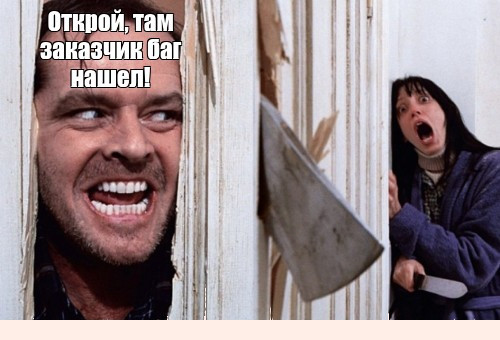
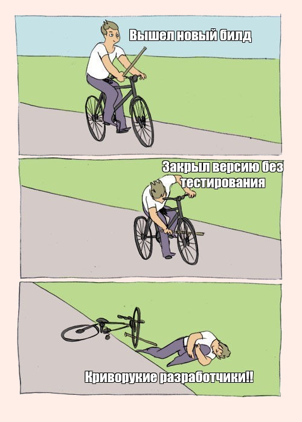

▲
НАВЕРХ
⬇ СПАМПАВАЦЬ РЭЗЮМЭПачакайце...
Пра сумоўе
Падшукваеш цёплае мястэчка, каб пасадзіць дупу, і тут прылятае водгук мары? Перш чым адпраўляцца трэсці сертыфікатамі перад эйчарам, прачытай мае парады. Асабліва, калі цябе трохі каламуціць ад перспектывы Літл конверсейшн і наогул ты, Маці Яго, мізантроп.
Сумоўе-гэта стремна
Ды што там стремна, гэта гамон як страшна. Рукі пацеюць, ногі адмаўляюць а голас становіцца як на запісы. Гэта значыць нешта блізкае да першага альбому Muse. Увогуле, каб прадухіліць панічную атаку і не збегчы незнарок назад у ліфт, убачыўшы офіс, Рэкамендуем кой-чаго даведацца і падрыхтавацца маральна:
Сумоўе на англійскай. Як выжыць
Калі ты імкнешся ў тэстыроўшчыкі, англійскі не павінен быць праблемай. Іншая справа што стрэс, усе справы, як у школе-Лондан з э кэпітал-не пракоціць. Пара саветаў. Па ўзроўнях, усё як мы любім.
Татальны гамон. Гэта калі ты пішаш у рэзюмэ ўзровень В2 або, о май гад, # упасибоже, С1, проста таму што бабуля і кот так лічаць, а ў размове цягнеш Дуду «май нэйм з», «ай градьюэтід», а больш не цягнеш,а толькі глядзіш на эйчра і вачыма, як рыба, лып-лып. Тут проста адразу паўзі ў нару
Херавата, але не смяротна. Шаблонныя адказы, відавочна адрэпеціраваныя. Як быццам адказваеш домашку. Напружана ўсё: твар каменнае, сфінктары жым-жым. Не трэба так. Гэта вырабляе ўражанне біяробата. Лепш зрабіць некалькі памылак, але і паказаць эмоцыі. Сумоўе-гэта дыялог, а не допыт з лямпай у твар, блеаць.
Асляпляльна, пышна. На сумоўі могуць (і будуць, гыгы) задаваць пытанні па ходзе размовы: так адразу зразумелы рэальны ўзровень. Выразны жывы адказ, пара-тройка жартаў - і вось ужо нікому не цікава, куды дзеўся твой артыкль і што там з другой формай няправільнага дзеяслова. Вы прынятыя, астатняе на ўнутраных курсах даб'ём. Ці яны нас, але гэта ўжо іншая гісторыя.
І наогул
Слова-то якое гідкае: сууу-моооў-е. Менш пафасу, спадары. Гэта проста сустрэча. Яна можа быць ахуіцельна выдатнай або неўебенна адстойнай, але ўсё, што ад цябе залежыць — надзець нешта візуальна прыемней, чым звычайна, замазаць вугры таналкой (хлопцаў таксама тычыцца) і выйсці рассякаць тварыкам паветра. На шляху да мары, без дулі ў кішэні. Зламаць нагу! У сэнсе, поспехі там, Гані
Слоўнік тэсціроўшчыка
Багі
Багі гэта памылкі ў праекце, якія і павінен пафіксіць (знайсці, апазнаць, задакументаваць) тэсціроўшчык. Тым, хто ўжо ўбачыў сябе Дабрыняй Нікіцічам, у даспехах зіхатлівых з мячом-кладзянцом супроць багоў акаянных якія выйшлі: паквіцеся. Нікіціч-то памятаеце з кім біўся? Са Змеем Гарынычам. Так і ў QA: багі ёсць, былі і будуць ёсць. Задача мануальнага тэсціроўшчыка-выявіць тыя з іх, што наўпрост паўплываюць на працу па. І зрабіць гэта да этапу прадакшну, а то зьядуць ужо самога змагара з сусветным непазбежным злом: такі вось харчовы ланцужок.
Фіча.
Таска, якую рабілі распрацоўшчыкі. Тыпу, так было задумана. Ты там гемарой выседзеў над справаздачай, уот із вронг. А табе ў адказ - "Won't Fix«, яно ж" гэта фіча. Так было задумана". І калі ў гэты момант у цябе вочкі ад лютасці не палопаліся, прымі нашы віншаванні: тэстыравальнік з цябе, відаць, выйдзе первее, чым ты з кабінета...каб разъябаць нахуй усіх гэтых крывадушных апездалаў!! Увогуле, не ўсякі баг гэта баг, ён можа быць і фічай. Прыняць, зразумець, дараваць.
Імпрув.
Ну, тыпу, імпрув з англасаксонскага-гэта паляпшаць. Таму ў QA імпрувам называюць усё гамон ахуенныя дапрацоўкі, якія ты (і твой гемарой) аформіць і прадставіць у выглядзе справаздачы па праекце. Каб вось гэта вось глючанае гаўно стала другім Вайбером, Шазамом, Энгр Бердс. Складанне імпрува гэта святы момант, сакрамэнт, адкрыцьцё для тэсціроўшчыка. Прыкладна як выявіць сябе ў труселях з каўбасой за шчокамі ў тры ночы ля халадзільніка. У гасцях, ага.
"Не на нашым баку".
Магічная формула, выкарыстоўваецца як мел ў акультных рытуалах. Той, якім мяжу ахоўнага круга акрэсліваюць, Ада. Пачуць гэтыя 4 словы можна ад распрацоўшчыкаў. Ты ім - спіс багаў і недапрацовак, ад якіх карыстачу з гэтым вось па толькі піздануцца можна, а яны табе "не на нашым баку", маўляў, ізыдзі, дэман. І перастаюць фіксаваць багі. А ты хочаш пафіксіць іх, чытаць як "атхуярыць", бо - за што?!
"Не прайграваецца".
Вось ведаеш, ёсць такі чалавек-сцыкло. Вось калі такі працуе разрабам, і не хоча больш фіксаваць багі, гэта значыць брыда, перашкаджае тваёй працы, але духу сказаць «не на нашай, блядзь, баку» не хапае... вось тады ты пачуеш «не прайграваецца». Проста прымі гэта. У крайнім выпадку, плюнь у каву.
"Не баг, а фіча".
Я ўжо казаў вышэй і яшчэ раз паўтару: галімая адгаворка разрабаў. Удакладнім план дзеянняў? Членашкодніцтва, дробнае пакастнічэства, падрывае пердак, будызм. Чаргаваць у залежнасці ад дня тыдня і выразы асобы аўтара паведамленні. На ўсялякі выпадак — завяшчаць кактус. У выпадку шчаснага зыходу-усвядоміць тленнасць быцця і фіксаваць багі далей.
"Пайшлі на кухню".
Ура, перапынак. Можна заварыць гарбату, поўзаць па чужым сабойкам у халадзільніку, таксама без толку і ладу карпаратыўнымі апельсінамі і зажевацьь пячэннем, і абмеркаваць навіны пра тое, колькі зарабляе дэбіл Вася пасля таго, як съебал да канкурэнтаў.
Страхі тэсціроўшчыка
Тэстыроўшчыкі — людзі удумлівыя, скрупулёзныя, з аналітычным складам розуму. Страхаў у іх, гэта значыць, дохуішча. І 99% - па працы.
Калі баг знайшоў заказчык
Чуеш гэтыя сумныя гукі удалечыні, якія нарастаюць? Гэты выццё на балотах, гэтыя першыя акорды "Лакрымозы" Моцарта, гэтую сігнальную пажарную сірэну праз квартал? Усё гэта зліецца ва ўнісон, калі выбухне бура. А яна выбухне, і пізданець па ўсёй камандзе, але асабліва-па табе, крыварукі ты еблан.
І сам заказчык можа быць няшка і разумелым чуваком, але такое грэбаванне яго прадуктам, ідэяй, інвестыцыямі, у рэшце рэшт, гэта як плявок у душу. Як падгледзець лішняга ў распранальні ды і піздануць ў агульнай кампаніі па п'яні. Давер, у агульным, падарвана.
Застаецца толькі падаць у ногі, абяцаць выправіць і дзесьці да месца ўкруціць пра "ліквідаваныя 66% недахопаў»і" што тычыцца рэалізацыі патрабаванняў у сапраўдны момант". Пераключыць увагу, ага. Не забываючы ліквідаваць той самы ебучы баг ў рэкордныя тэрміны
Калі баг быў знойдзены на продзе
Сцэнар тыповага начнога кашмару тэсціроўшчыка. Ды што там, усяго QA аддзела. Заходзіць як-то раз прадукт менеджэр на прадакшну сэрвэры, клікае, і тут... Баг. Бажына. Дупа, карацей.
Добрая навіна ў тым, што рашэнне простае і элегантнае, кодавая аперацыя "выпусціць хотфікс да таго, як уладальнік прадукту ўбачыць гэта". Ну і дзейнічаць трэба хутка. Максімальна, бля, хутка.
Калі на рэтраспектыву паклікалі толькі цябе
"Ну ўсё гамон, разбор палётаў, у наяўнасці адзін падстрэлены верабей" - прыкладна такія адчуванні будуць суправаджаць цябе па дарозе, праўда? У галаве бягучым радком усе работы, выкананыя па праекце, усе тонкія моманты, невідавочныя штукі, пара-тройка схаваных пад дыван "і так сыдзе", дзясяткі варыянтаў, што можна было палепшыць, але не дайшлі рукі... і літры халоднага поту па спіне.
На самай справе ўсё не так страшна, у сэнсе рэтраспектыва ў Ай-Ці - гэта ж абмен думкамі, прыняцце рашэнняў па праблеме, мгм? Пакуль гадзіна Х не наступіла, лепш папаўняцца гонару і чухаць ЧСВ на тэму «які я значны птушак», маўляў, вырашылі лічыцца з табой з усёй каманды, чым нервавацца пачым дарма, чакаючы прылюднага бічавання. У крайнім выпадку, ўспомніш мой топ отмазак
Калі тэставаць пачынае каманда заказчыка замест цябе
Трывожны знак, сапраўды. Хмары згушчаюцца, дожджык збіраецца, параноя мацнее. Магчыма, нешта не так з тваёй манерай зносін, уключаючы справаздачы, што на тым баку хочуць бачыць толькі, уласна, той бок? Лепш бы акуратна высветліць у PM, адкуль вецер дзьме. У горшым варыянце такое " ідзіце нахрен, спадар тэсціроўшчык» можа азначаць твой сур'ёзны праёб, а тут ужо сапраўды не да жартаў.
Калі ў цябе просяць даць максімальна падрабязную справаздачу пасля тэставання
Альбо ты свята паверыў, што сцісласць — сястра тлнт, і выключыў галосныя ці яшчэ якім чыцерствам-дрочэрствам заняўся над сваімі «фірмовымі» справаздачамі, альбо тваё працоўны час у суадносінах з эфектыўнасцю выклікае пытанні ў якія кормяць. То бок, тых, хто плаціць за твой кава і печыва. Колькасць якіх пасля такіх вось просьбаў трэба скараціць. І мемасікаў таксама, так. А лепш охуеть і спытаць прама, маўляў, ачотакова са справаздачамі, нормаў жа размаўлялі?
Калі заказчык хоча пагутарыць толькі з табой
Да чаго мне такі гонар, мармычаш невыразна ты, спаўзаючы па сценцы. Але так здараецца: ты стаў занадта прыкметнай фігурай на гэтай дошцы, засталося вызначыцца: гэта шахматы або падаўкі, ты здабыў вагу і да цябе асаблівае даручэнне ці табе зараз растлумачаць, як трэба працаваць, гранічна на пальцах? Дрэнныя навіны: без зваротнай сувязі ты гэта не даведаешся. Так што выпі чаго-небудзь "на траўках" і тупай абмяркоўваць.
Калі пасярод ночы ты бачыш 73 прапушчаных ад заказчыка і калегаў.
Відавочна гамон. Відавочна маштабны. Відавочна тваё удзел у гэтым. Але!! Пакуль ты спаў, быў у коме ці ў іншай краіне (73 званка, сур'ёзна, так?!), магчыма, праблема вырашылася без твайго ўдзелу? І тады перанабраўшы апошні з прапушчаных, ты пачуеш у трубцы» ужо не трэба " замест маляўнічага апісання сябе, уключаючы асабістыя якасці, прафесійныя навыкі і ўменні і напрамкі бліжэйшага падарожжа. А можа, і планаў на бестэрміновы адпачынак
Адмазкі для тэсціроўшчыка
Выходзіць такі свежанькі багаборац з курсаў, праходзіць усе колы пекла на гутарках, трапляе на першае месца працы. Вучыцца тэставаць, глядзяць на прадукт карыстацкімі вачыма, складаюць справаздачы і прымушаюць разрабаў вджобывать над паляпшэннем ПА і ўстараняць памылкі. А потым нешта ідзе не так і-прывітанне, адмазкі.
"Я гэты баг бачыў, не паспеў проста аформіць»
Ну добра, хоць мімасікі новыя зацаніў і пару кубкаў кавы ляпнуў. А то упахаўся зусім, небарака. Ёсць верагоднасць, што пара-тройка такіх "непаспяванняў" - і над тайм-мэнэджментам прыйдзецца працаваць, не адцягваючыся на офісную руціну. Таму што паспець аформіць памылку гэта, дапусцім, дахера цяжка непад'ёмна і лепш у іншай фазе Месяца, але черкануть для сябе нешта можна? Калі, вядома, было што крэсліць.
"У мяне гэта не прайгравалася»
Няйначай змова. Пасля такіх гучных заяў застаецца толькі ўважліва агледзець працоўнае месца на прадмет іголак, солі і іншых акультных прыладаў, схаваць кружку ў стол ад граху далей і ўзламаць пошту тымліда: там напэўна пруфы з разраду асабістай непрыязнасці і магічнага ператварэння кода ў той момант, пакуль вы адвярнуліся.
"Так было ў дызайне»
Звычайна гаворка ідзе пра Minor або Trivial багах: некрытычныя "жукі", якія працу праграмы моцна не парушаюць, дызайн не ламаюць. Непрыемна, але перажыць можна. З іншага боку, такую адмазку лёгка праверыць. І хто цяпер тут ідыёты?
"У дызайне гэтага не было»
Дрэнны пераклад " я не прадумаў тэставае пакрыццё так, каб ахапіць прадукт найбольш поўна». І так, пра адмазкі, якія лёгка праверыць: мы як раз нядаўна абмяркоўвал
"Я думаў, што так і павінна працаваць»
Абстрактна прадстаўляць сферычных каней у вакууме, там жа ставіць галачку Done і ісці далей, наогул-то, не зусім задача тэсціроўшчыка. Падумаць, што карыстальнік чакае і праверыць ручкамі-гэта ўжо бліжэй да QA. Увогуле, такі сабе варыянт "прапусціў, каюся"."Гэтую фічу правяраў распрацоўшчык»
Дапусцім, гэта праўда. Парадокс у тым, што ад гэтага яна не перастае быць тупой_адмазкай. Ну напрыклад, якога хера ты даеш тэставаць фічы кодэрам, якія іх жа і пісалі? Для Васі код Васі ідэальны па змаўчанні - гэта ж код Васі! А грошыкі за тое, каб усе паламаць к хуям, каб зрабіць лепш, атрымліваеш ты. Спроба перавесці стрэлкі за дрэнную праверку паказвае цябе як піздабола і ябеду. Не трэба так.
«Я гэта правяраў, усё працавала ідэальна, мабыць само паламаліся»
Здаецца, так можа сказаць толькі чалавек, які дрыгатліва любіць прыніжэньня і нарываецца атрымаць па мордзе. З іншага боку, гэта характарызуе аптыміста: само паламалася-само і паправіцца! Праўда, у гэты светлы момант аўтар паслання, верагодна, будзе заняты зборам рэчаў і развітаннем з калегамі.
Калі сур'ёзна
У сферы QA бывае ўсякае: і банальны недахоп часу (на поўнае тэставанне перад рэлізам пасля дапрацоўкі), недахоп інфармацыі аб прадукце, дзіўныя патрабаванні заказчыка, складаныя камунікацыі ў камандзе... і ёсць чалавечы фактар: так сабе кваліфікацыя або атрафаванае пачуццё асабістай адказнасці за вынік.
Дык вось памятаеце, што кожны раз, калі замест выканання сваіх абавязкаў ці простага прыняцця факту таго, што вы наебнуліся, з наступным жа выпраўленнем вушакоў, вы сутаргава перабірае адмазкі — гэта выглядае гэтак жа па-даросламу і прыгожа, як Эксгібіцыяніст ў аўтобусе. І пачуцці выклікае адпаведныя.
Мараль. Ня праёбывайцеся, а калі ўжо здарылася — знайдзіце сілы прызнацца сумленна, і прапанаваць варыянты выпраўлення сітуацыі, і зрабіць. Амінь.